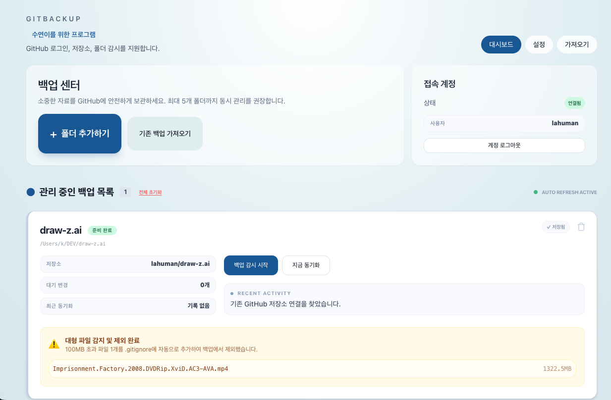

백업은 중요한데,
사용법까지 어렵게 만들 필요는 없습니다.
GitBackup은 일반 사용자도 부담 없이 시작할 수 있도록 화면, 버튼, 설명 흐름을 단순하게 구성했습니다.
GitBackup은 어려운 명령어 대신 로그인 → 폴더 선택 → 자동 감시 흐름으로 파일 백업을 시작할 수 있게 만든 Windows 앱입니다. 자주 바뀌는 작업 폴더, 문서 폴더, 개인 자료를 GitHub 저장소에 편하게 보관하고 이어서 관리할 수 있습니다.

GitBackup은 일반 사용자도 부담 없이 시작할 수 있도록 화면, 버튼, 설명 흐름을 단순하게 구성했습니다.
설치 후 로그인하고 폴더를 연결하면 바로 사용할 수 있습니다.
파일 변경을 감지해 수동 복사보다 편하게 유지할 수 있습니다.
이미 GitHub에 있는 저장소도 다시 가져와 이어서 사용할 수 있습니다.
어려운 기능을 많이 보여주는 대신, 실제로 백업을 시작하고 계속 유지하는 데 필요한 경험만 남겼습니다.
개발자용 Git 툴처럼 복잡하게 느껴지지 않도록, 버튼 중심의 친숙한 UI로 백업 시작 과정을 단순하게 만들었습니다.
문서, 사진, 작업물처럼 자주 바뀌는 폴더를 간단하게 선택하고 관리할 수 있습니다.
파일 변경을 감지해 백업 흐름을 유지하고, 필요하면 즉시 동기화도 가능합니다.
주의가 필요한 파일을 먼저 보여줘 업로드 실패 가능성을 줄이고 혼란을 줄입니다.
처음 설치할 때부터 실제로 백업이 돌아가는 순간까지, 필요한 기능을 명확하게 보여줍니다.
계정을 연결해 백업 저장소를 사용하고, 기존 백업도 다시 연결할 수 있습니다.
내가 선택한 로컬 폴더를 기준으로 중요한 파일을 간편하게 관리할 수 있습니다.
폴더 변경 사항을 감지해 반복적인 수동 복사 대신 더 자연스러운 백업 흐름을 제공합니다.
필요한 순간 버튼 한 번으로 현재 폴더 상태를 바로 반영할 수 있습니다.
이미 GitHub에 저장한 백업 저장소를 다시 내 PC에 가져와 이어서 관리할 수 있습니다.
업로드 전에 주의가 필요한 파일을 미리 보여줘 실패 가능성을 낮춰줍니다.
앱 설치 후 로그인
백업할 폴더 선택
자동 감시 또는 즉시 동기화
다운로드 전에 어떤 화면인지, 어떤 흐름인지 바로 감이 오도록 정리했습니다.
현재 계정 상태, 관리 중인 백업 목록, 즉시 동기화 버튼, 최근 상태를 빠르게 확인할 수 있습니다.
동기화 간격, 큰 파일 알림, 기본 공개 범위처럼 실제로 필요한 옵션만 간단하게 설정할 수 있습니다.

이미 GitHub에 저장된 저장소를 선택하거나 주소를 입력해 기존 백업을 다시 연결할 수 있습니다.

처음 쓰는 사람도 부담 없이 시작할 수 있도록 핵심 흐름만 남겼습니다.
계정을 연결해 백업 저장소를 준비합니다.
중요한 문서, 작업 폴더, 개인 자료 폴더를 연결합니다.
자동으로 관리하거나, 필요할 때 직접 현재 상태를 반영할 수 있습니다.
처음 보는 앱일수록 시작 전에 궁금한 점이 많습니다. 가장 자주 묻는 내용을 먼저 정리했습니다.
중요한 폴더를 쉽고 빠르게 백업하고 싶은 일반 Windows 사용자를 위한 앱입니다.
네. GitBackup은 GitHub 저장소에 파일을 보관하는 방식이므로 계정 연결이 필요합니다.
가능합니다. 가져오기 화면에서 저장소를 불러오거나 주소를 입력해 연결할 수 있습니다.
현재 페이지와 다운로드 안내는 Windows 사용자를 기준으로 구성되어 있습니다.
GitBackup으로 중요한 폴더를 빠르게 연결하고, Windows에서 부담 없이 백업 습관을 만들 수 있습니다.